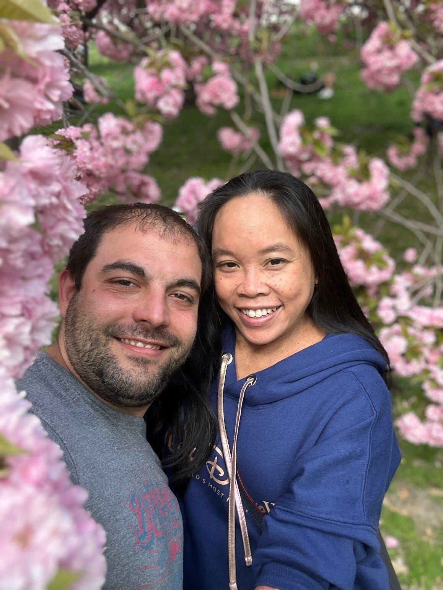

Earlier this year, a woman named Kanokpron Tangsuan ate at a restaurant in Disney's Orlando resort that was advertised to be allergen-free. She has a severe nut and dairy allergy, and tragically died of an allergic reaction from that restaurant. Her husband, Jeffrey Piccolo, proceeded to sue Walt Disney Parks and Resorts over this incident. However, Disney responded with evidence of him signing up for a free trial of Disney+, whose TOS agreement states to settle any disputes out of court.

Such a dispute has terrible implications: if it were to be successfully disputed, then all 153 million subscribers of Disney+ and more would be incapable of going to court against Disney for any reason. Fortunately however, Disney dropped this request in this request, recognizing the wrong done to Piccolo. See
here and
here from NY Times
This is a real example of how users can be taken advantage of through the fine print of TOS agreements, and companies should be held accountable for such absurd requests.
Of course, not all TOS agreements have ulterior motives and are evil; there are mutiple stakeholders, values, and power dynamics at play in this conflict with consent agreements.
The stakeholders are:
- The user of a company's service: waivers the rights that the company outlines, is at risk of waivering more rights that he intended
- Those related to the user: WHichever way the user is affected through his business with a company may indirectly affect those close to him. For example, in the Disney example, both the husband and the wife's families could benefit from the lawsuit money, and they would be in a worse position had the case been dropped due to having a free trial of Disney+
- The employyes and employers of the company: TOS and other types of agreements exist fundamentally to protect a company. However strong that protection is affects the well-being of that company
- The shareholders of said company: Once again, the well-being of the company affects it's stocks, value, and assets, which depends on the level of their protection
The freedom of the individual is intrinsically tied to his rights, and by signing consent agreements with businesses, he may lose some of his rights. To best satisfy this ethical lens, the individual should need to waver as few rights as possible within reason. Similarly,